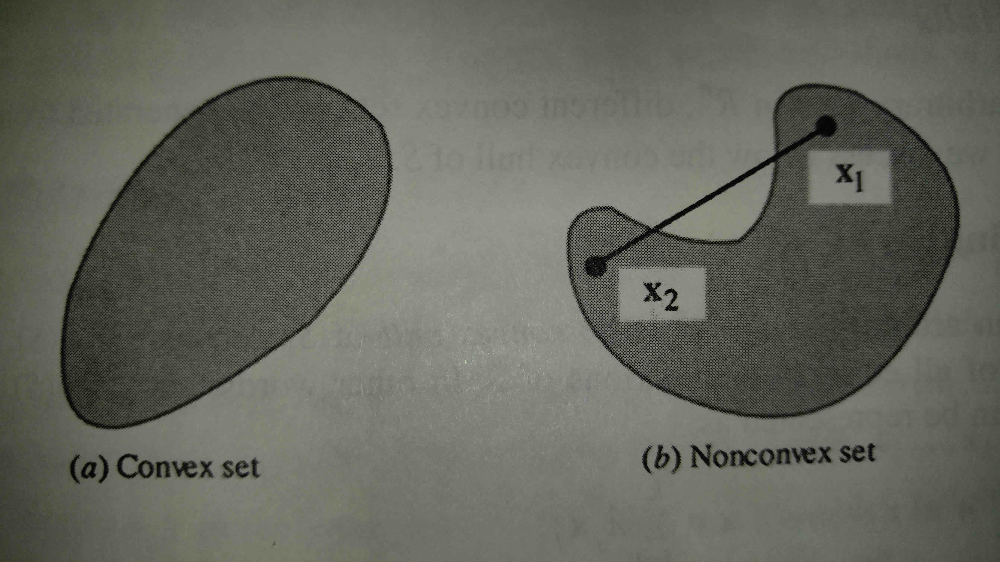

- All vectors are column vectors unless stated otherwise
- Composed of all real vectors of dimension n
Nonlinear Programming: Theory and Algorithms
Written by Mokhtar S. Bazaraa, Hanif D. Sherali and C.M. Shetty
Published as a book: May 2006
Physical Book (Amazon Link)
Discrete Optimal Control
- A problem is divided into K individual periods where
is the state vector at the beginning of a period and is changed to
at the end of the period by the control vector

- The new state vector is determined by the following relationship:
for k = 1,...,K
- From the initial state
the sequence of controls (
) resulting in a sequence of state vectors (
) is refered to as the trajectory
- Sequence of state and control vectors (
) are admissible or feasible if they satisfy
,
for k = 1,...,K and
 \in D")
,
and D are specified sets
is a known function refered to as the trajectory constraint function
- The problem then reduces to minimize an objective function (
) with the constraints
,
,
, and
 \in D")
- This form fits the basic problem statement given in section 1.1
Continuous Optimal Control
- In the continuous optimal control problem the relationship between the state vector
and the control vector
is given by
over the planning horizon
- The problem can then be stated as minimize
subject to the constraints
and
for
and
- The problem can now be approximated by a discrete solution if the planning horizon [0, T] is subdivided into K intervals of duration
such that

and
for k = 1, ..., K
- The problem can now be restated as minimize
subject to the constraints
,
, and
for k = 1, ..., K and
Convex Sets
- A set is convex if the line segment joining any two points in a set does not leave the boundary of the set (is also contained in the set)
- This can be stated mathematically as
where
,
for
meaning the weighted averages of the x values are also within the set
- These weighted averages are called convex combinations of
- Getting rid of the non-negativity requirement for
(
- The combination
where the only requirement on
is that it is in
is called a linear combination
- Some properties of convex sets include
- The intersection of two convex sets is convex (
is convex)
- The sum of two convex sets is convex (
is convex)
- The difference of two convex sets is convex (
is convex)
|  |
Convex Hulls
- A convex hull is the intersection of all of the convex sets containing set S (the smallest convex set containing S) where S is an arbitrary set in

- The convex hull is denoted conv(S)
- The convex hull is subject to the same mathematical constraints as the convex set:
where

- An affine hull of S is the collection of all affine combinations of points in S
- A linear hull of S is the collection of all linear combinations of points in S
Polytope and Simplex
- A polytope is the convex hull of a finite number of points
in
- If
are linearlly independent then
- The convex hull of a set of affinely independent points (conv(
)) is called a simplex with vertices
- Maximum number of linearlly independent vectors in
no simplex in
Carathéodory Theorem
Neighborhood
- The neighborhood around a point is the area/volume surrounding that point
- The neighborhood can be represented by the set
Closure
- A point x is in the closure of a set S if
for EVERY
- This mathematical definition is saying that point x is in the closure of S if there is an intersection of the area around the point and S as the radius of that area goes to zero
- The closure of set S is represented by cl S
- A Closed set is a set where the set is equivalent to its closure (S = cl S)
- This includes both the interior of S and its boundary
Interior
- A point x is in the interior of a set S if
for SOME
- The mathematical definition is saying that point x is in the interior of S if for some radius larger than zero the entirety of the neighborhood is enclosed in S, however, it is understood that as the radius increases it will eventually not be enclosed by S
- The interior of set S is represented by int S
- A Solid set S


)
- An Open set is a set where the set is equal to its interior (S = int S)
Boundary
- A point x is in the boundary of a set S if
contains one point in S and one point not in S for every
- The above definition is saying that point x is in the boundary of S if its neighborhood includes both a portion outside of set S and a portion inside of set S for any radius
- The boundary of S is represented by
S
- Set S is considered Bounded if it can be contained by a ball of sufficiently large radius
- Boundary points of any set and its complement are the same
The complement of an open set is a closed set and vice versa
Greatest Lower Bound and Least Upper Bound
- The greatest lower bound of set S is the largest possible scalar
such that
for
- This means that the greatest lower bound is the point that reaches the lowest point of set S
- The greatest lower bound is also refered to as the infimum of set S and is denoted by
- The least upper bound of set S is the smallest possible scalar
for
- This means that the least upper bound is the point that matches the highest point of S but no higher
- The least upper bound is also refered to as the supremum of set S and is denoted by
Weierstrass's Theorem
- If set S is nonempty, closed and bounded (compact) and f is continuous on S then a minimum of
exists
Minimum Values
- When minimizing a function
over
the point
is a local minimum if there exists an
neighborhood around
for
- If the local minimum
for
where
then the value is refered to as a strict local minimum
- Lastly if the optimal solution
then the value is refered to as a global minimum
- Note that all global minimums are also local minimums
Necessary and Sufficient Conditions
- Necessary conditions are conditions which must be satisfied for every local optimal solution, however, satisfying them does not prove that the point is a local optimal solution
- Sufficient Conditions are conditions that, when satisfied, are enough to prove that a point is a local optimal solution
Descent Direction
- Given a function
that maps an amount
real numbers to a real number and is differentiable at point
- If there is a vector
such that
then there exists a
such that
for each
then
- The above definition is saying that if the gradient of
is negative in the
- Corollary to descent direction
- If

is differentiable at
then
- The condition uses the gradient of
Second Order Necessary Condition
- For function
, has to be positive semi-definite (have non-negative eigen values)
Sufficient Optimality Conditions
Strict Local Minimum
- The sufficient optimality condition for a strict local minimum at point
and